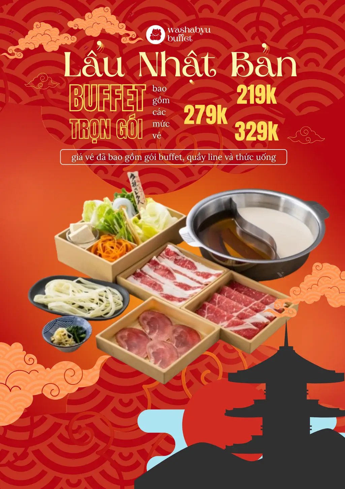
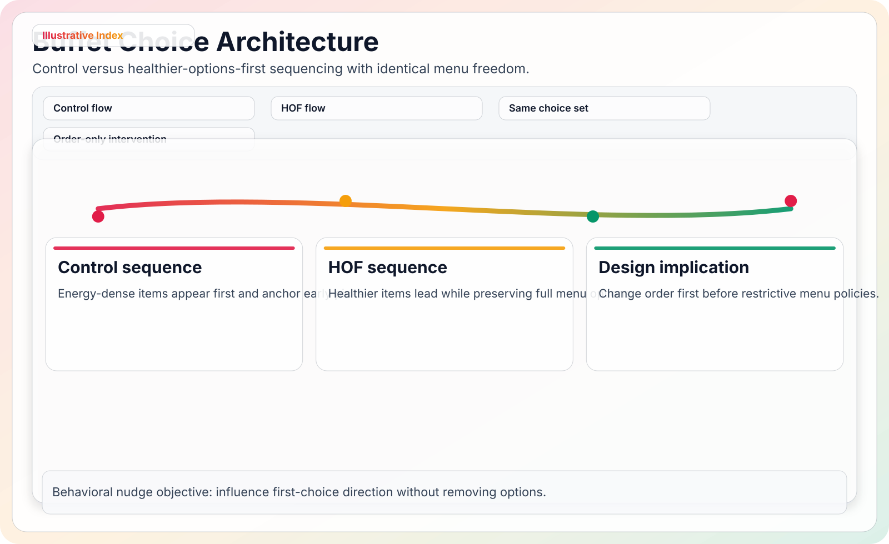
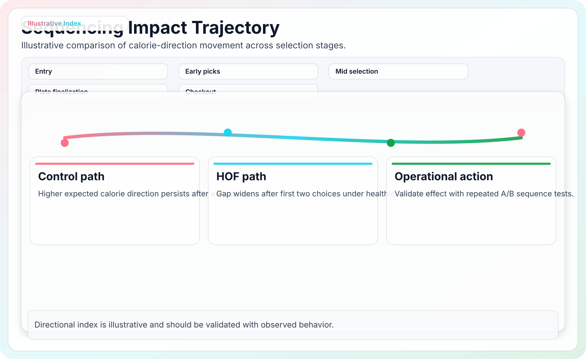
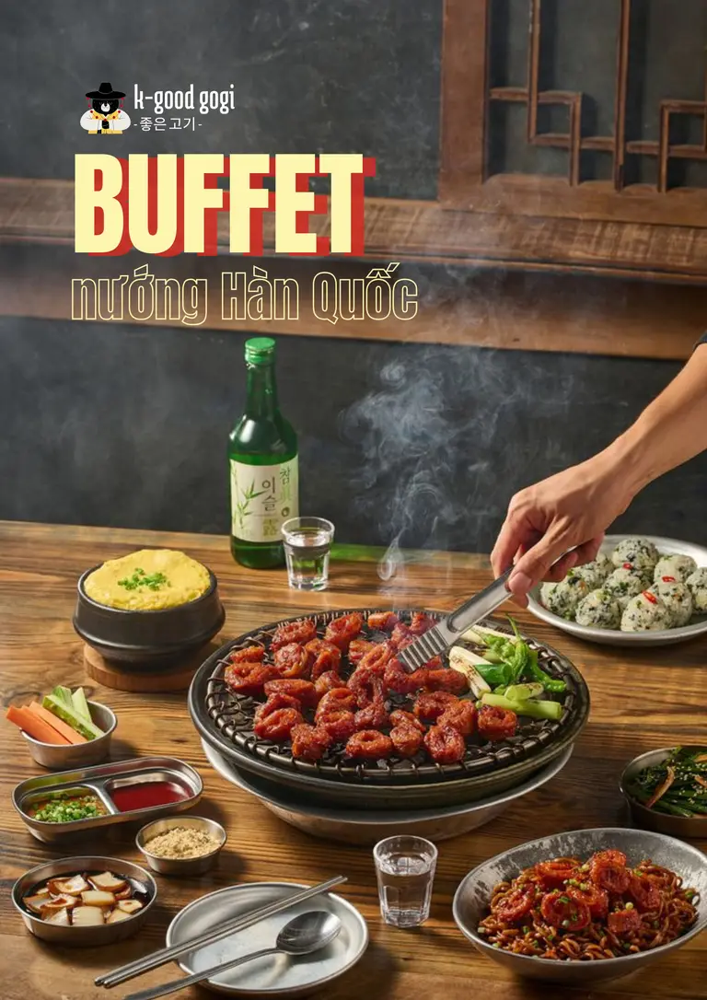
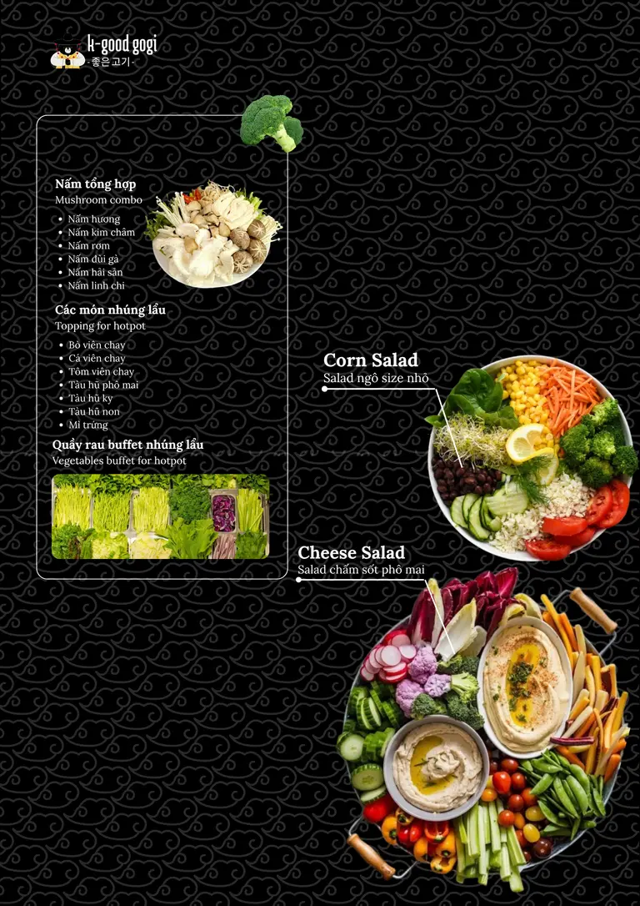
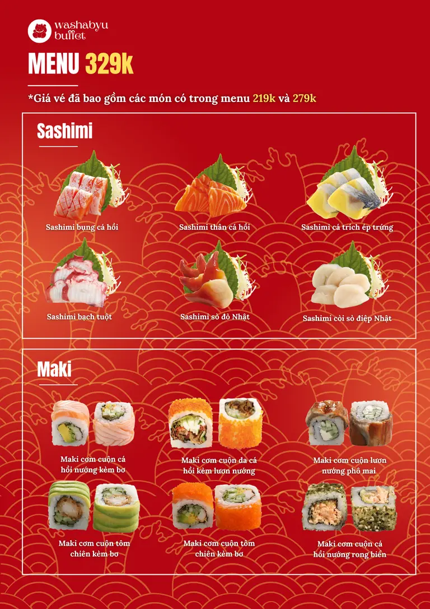

Sample
257 + 147 Two Vietnamese online menu simulations.
Back to all research
Behavioral research project
Buffet menu nudging and choice architecture
Two online menu experiments tested a small design change: show lighter options before indulgent ones while keeping the full menu available. The useful part is the trade-off. Healthy-first order lowered intended calories, but it could also make premium bundles feel less worth paying for when meat cues moved later.

What the page needs to prove
The question is not whether vegetables are "better". It is whether order changes decisions.
Buffet guests see abundance before they make choices. This project asks whether the first screen or first section of a menu can act like a soft default. It also checks a business concern that often gets skipped: does a healthier order protect perceived value, or does it make the offer look less premium?
Behavioral lever
Menu order changes what appears first. Nothing is removed, priced differently, or hidden from the diner.
Commercial tension
For hotpot and Korean buffet menus, visible meat abundance helps signal value. Moving it later can reduce upgrade interest.
Evidence boundary
The study measures intended choices in simulated menus. It does not claim measured waste reduction, realized revenue, or repeat visits.
Method
Two experiments, one manipulation
Both studies used simulated menus. The manipulation was the sequence of options: healthier-options-first (HOF) versus unhealthier-options-first (UOF).
- Study 1: 2×3 between-subjects design across hotpot, Korean tokpokki, and vegetarian buffet contexts. Final sample: n = 257.
- Study 2: hotpot-only tiered-price simulation using 219k, 279k, and 329k VND packages. Final sample: n = 147.
- Measured outcomes: intended calorie intake, perceived value, and selected buffet tier.
- Interpretation: intended intake is a planning proxy for plate-waste pressure, not a weighed waste measure.
Design rule used on this page
Every result is labeled as simulated, reported, or derived. That keeps the page useful for portfolio readers without overstating what the experiment can prove.
HOF = healthier-options-first
UOF = unhealthier-options-first
Outcome = intended choice
Evidence design
Make the mechanism visible before showing the numbers
The strongest layout change is not a bigger chart. It is a clearer sequence: what changed, what stayed the same, and where the trade-off appeared.


Simulation stimuli
Show the actual menu screens, but do not let them overwhelm the page
The previous page showed many stimuli at once. This redesign keeps a sample strip so readers understand the experiment without scrolling through a full asset dump.



Findings
The effect is useful, but it is not free
Healthy-first order reduced intended calories in indulgent buffet contexts. The business risk is that guests may read the same order as a weaker premium offer.
HOF reduced intended intake
Study 1 reported 1427 kcal under HOF versus 1573 kcal under UOF, a 146 kcal reduction in planned selection.
The effect depended on buffet type
The gap was strongest for hotpot and Korean buffet menus. Vegetarian menus showed little difference, which makes sense because the early menu already looked lighter.
Premium demand weakened
In Study 2, premium-tier selection fell from 52.4% under UOF to 23.8% under HOF. The reported odds ratio for higher-tier choice was 0.52.
| Question | Evidence | Plain reading |
|---|---|---|
| Does sequence affect intended calories? | Study 1: t(255) = -3.86, p < .001 | Yes. HOF lowered planned intake overall. |
| Does buffet format matter? | Interaction F(2, 251) = 17.79, p < .001 | Yes. Meat-forward menus were more sensitive to order. |
| Does value perception explain tier choice? | Indirect effect = -0.339, 95% CI [-0.56, -0.15] | Partly. HOF lowered perceived value, which then reduced premium choice. |
Application
Use healthy-first order as a field test, not as a slogan
The practical path is to test the ordering change while protecting premium value cues. A restaurant should not hide the items that make the paid tier feel worth it.
Start with one channel
Run HOF in a digital menu or one printed menu variant before changing every touchpoint.
Keep premium proof visible
Show seafood, special cuts, or chef stations early enough so the upgrade still feels concrete.
Measure real behavior
Track plate waste, upgrade rate, satisfaction, and contribution margin. The simulation cannot answer those alone.
Segment by format
Use stronger nudges in indulgent buffet formats and lighter changes in already healthy menus.
Bottom line
Small menu changes can help, but only when the value story survives.
This is a useful research detail page because it shows both sides of the result: lower intended intake and a possible premium-conversion cost.
Selected references
Sources used in the study framing
- Brunstrom, J. M. (2014). Mind over platter: pre-meal planning and the control of meal size in humans.
- Dolnicar, S., Juvan, E., and Grun, B. (2020). Reducing the plate waste of families at hotel buffets.
- Juvan, E., Grun, B., and Dolnicar, S. (2017). Biting off more than they can chew: food waste at hotel breakfast buffets.
- Thaler, R. H. and Sunstein, C. R. (2021). Nudge: The Final Edition.
- United Nations Environment Programme. (2024). Food Waste Index Report 2024.